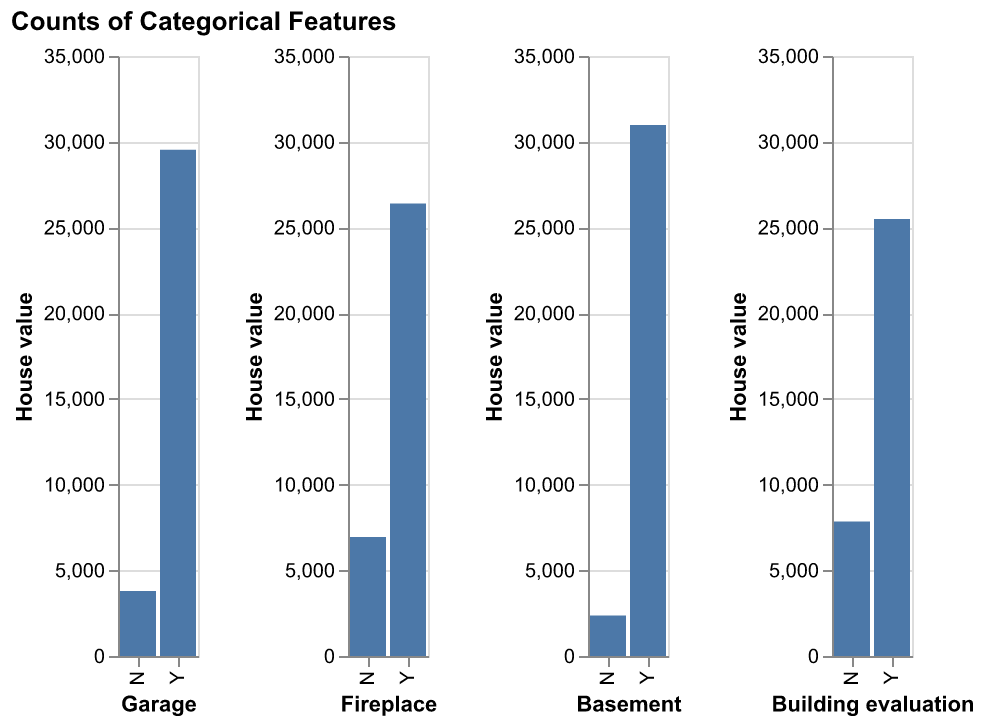
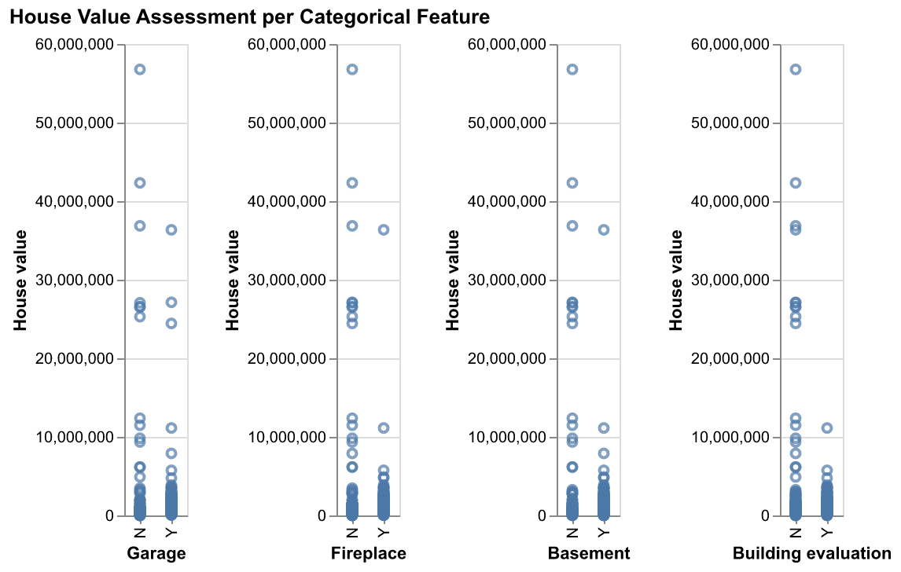
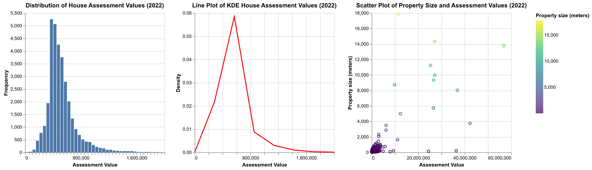
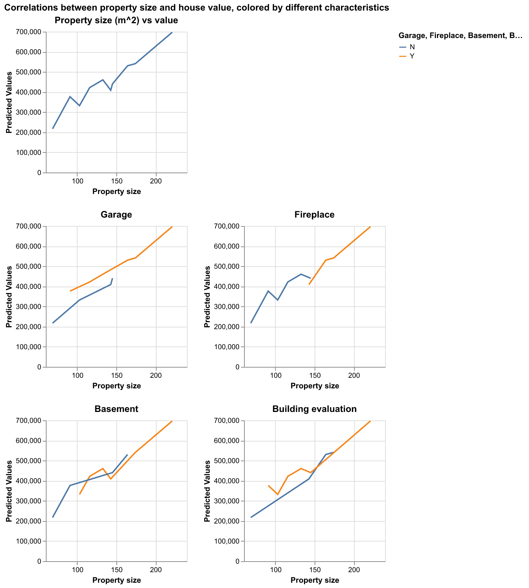

| meters | garage | firepl | bsmt | bdevl | assess_2022 | |
|---|---|---|---|---|---|---|
| 0 | 150.590 | Y | Y | Y | N | 382460 |
| 1 | 123.560 | N | Y | N | N | 280370 |
| 2 | 104.980 | N | N | N | N | 402000 |
| 3 | 66.611 | N | N | N | N | 3690 |
| 4 | 123.830 | Y | Y | Y | Y | 295910 |
| 5 | 205.400 | N | Y | Y | Y | 419000 |
| 6 | 120.680 | N | Y | Y | N | 289380 |
| 7 | 83.148 | N | N | Y | Y | 326170 |
| 8 | 120.770 | N | N | Y | Y | 419000 |
| 9 | 115.940 | Y | N | N | N | 290000 |
Title: Strathcona House Value Predictor
Summary
Our team will be working on predicting house prices using the 2023 Property Tax Assessment dataset from Strathcona County Open Data portalCounty (2023). The dataset provides a wealth of information about houses, including attributes like size, location, and other features. By leveraging this data, we aim to build a robust predictive model that accurately estimates house values.
Introduction
The team will be using Ridge which is a linear model to predict the value of houses. Ridge is a regularization model that is used for predictive modeling and mitigates over fitting, improves model stability especially when features are highly correlatedHoerl and Kennard (1970). Ridge helps create robust model that generalize well to new data. The question we aim to answer: Can we predict house prices using publicly available housing data , and which features most influence the predictions? This research is significant as understanding housing prices plays a critical role in assessing broader economic trends, identifying market patterns, and addressing housing affordability issues. Accurate price predictions can help promote transparency and stability in the housing market, which benefits individuals and the economy as a whole.
Data description: For this project we are going to use the 2023 Property Tax Assessment from Strathcona County Open Data portalCounty (2023). The data set contains the following attributes related to the different houses. The variables we selected for the model are:
meters - numeric variable that show the size of the house
garage - categorical variable where Y means there is a garage and N means no garage.
firepl - categorical variable where Y means there is a fireplace and N means no fireplace
bdevl - categorical variable where Y meas the building was evaluated and N means it was not evaluated
The data set was chosen for its rich feature set, adequate sample size, and public availability making it suitable for building a predictive model.
Methods & Results
We used Ridge Regression to predict house values based on features such as building size, garage presence, and building evaluation. Ridge regression, as outlined by Hoerl and Kennard (1970), is particularly useful in addressing multicollinearity. Model selection and evaluation were facilitated by Scikit-Learn’s robust tools Learn (2024). Exploratory visualizations were created using Altair “Altair Tutorial, Exploratory Data Visualization with Altair” (2024). The report is generated using tools Quart Team (2024).
1. Import all the necessary libraries for data analysis
- pandas
- numpy
- sklearn.model_selection
- altair
- os2. Read in dataset
We read the CSV file named 2023 Property Tax Assessment into a pandas DataFrame and filters it to include only the features we are going to evaluateCounty (2023). The resulting DataFrame contains the specific features for further analysis. Table 1 displays the first few rows of the dataset after filtering for the relevant columns.
For the beginning exploratory data analysis, we performed data validation checks to ensure the following:
- Correct data file format
- Correct column names
- No empty observations
- Missingness not beyond expected threshold
- Correct data types in each column
- No duplicate observations
- No outlier or anomalous valuesListed below is the results for our validation check.
✅ File format validation passed: File is a CSV.
✅ Column name validation passed: All expected columns are present.
✅ Empty observations validation passed: No empty rows.
✅ Missingness validation passed for all columns.
✅ Data type validation passed for all columns.
Duplicate observation validation failed: Found 2425 duplicate rows.
✅ Duplicates have been removed from the DataFrame.
Warning: Column 'meters' has 885 outliers, within acceptable threshold (5000).
Warning: Column 'assess_2022' has 2048 outliers, within acceptable threshold (5000).
✅ Outlier validation passed: No columns exceed the outlier threshold.3. Visualization for categorical features
We have enabled VegaFusion to optimize Altair data transformations for visualizations“Altair Tutorial, Exploratory Data Visualization with Altair” (2024). We then created a distribution plot of categorical features in the housing_df DataFrame. As shown in Figure 1, the distribution of categorical features provides insights into their overall counts.

The scatter plots visualize the relationship between house assessment values (assess_2022) and four categorical features: garage, firepl, bsmt, and bdevl. As depicted in Figure 2, the scatter plots illustrate the relationship between house value assessments and categorical features.

4. Prepare data for training and create column transformer for feature transformation
Visualizing the distribution of the target variable, assess_2022, using a histogram and Kernel Density Estimate (KDE) plot is a crucial step in data exploration. It helps us understand the overall distribution, identify patterns such as skewness, kurtosis, or multiple peaks, and detect outliers. By comparing the histogram and KDE, we can assess if the distribution meets the assumptions of our chosen modeling techniques. This visualization also guides decisions about preprocessing, such as applying transformations to address skewness or choosing the right algorithm for modeling. Additionally, it can uncover data quality issues, like sparse regions or missing values, prompting necessary corrections.
As depicted in Figure 3, the combined visualizations provide valuable insights into the distribution and relationship between property sizes (meters) and house assessment values (assess_2022). The scatter plot showcases how larger properties tend to have higher assessment values, while the histogram and KDE plot reveal the overall distribution and density of assessment values in the dataset.

According to the scatter plot, the vast majority of our data points are concentrated within the 0 < meters < 2000 range, with some more within the 2000 < meters < 5000 range, and there are a few outliers in the meters > 5000 range that make it difficult to get a closer look on the majority of our data. We can see a similar story on the assess_2022 feature as it has the vast majority of points in the low-mid range and some outlying extreme values.
We have split the housing_df DataFrame into training and test datasets using an 70-30 split, categorized features into categorical features (e.g., garage, firepl, bsmt, bdevl) and numeric features (e.g., meters), applied one-hot encoding transforamtion for categorical features and standardScalar transformation for numeric features by using Scikit-learnLearn (2024). We then created a column transformer preprocessor through combining these transforamtions to apply to the dataset and visualizes the preprocessor.
We performed analysis to identify any potential issues with the relationships between features and the target, as well as between the features themselves. By detecting anomalous correlations, we can uncover redundant or highly correlated features that might lead to multicollinearity, which can negatively affect the performance of machine learning models. In particular, removing or adjusting features that are too strongly correlated ensures that the model can learn meaningful, independent relationships, improving its generalization ability and interpretability. Additionally, examining correlations helps us assess if certain features are disproportionately influencing the target variable, which could indicate bias or overfitting.
ColumnTransformer(transformers=[('onehotencoder', OneHotEncoder(),
['garage', 'firepl', 'bsmt', 'bdevl']),
('standardscaler', StandardScaler(),
['meters'])])In a Jupyter environment, please rerun this cell to show the HTML representation or trust the notebook. On GitHub, the HTML representation is unable to render, please try loading this page with nbviewer.org.
ColumnTransformer(transformers=[('onehotencoder', OneHotEncoder(),
['garage', 'firepl', 'bsmt', 'bdevl']),
('standardscaler', StandardScaler(),
['meters'])])['garage', 'firepl', 'bsmt', 'bdevl']
OneHotEncoder()
['meters']
StandardScaler()
Validation step
- Check for correct category levels (i.e., no string mismatches or single values)
✅ Category levels validation passed for column 'garage' in train_df.
✅ Category levels validation passed for column 'firepl' in train_df.
✅ Category levels validation passed for column 'bsmt' in train_df.
✅ Category levels validation passed for column 'bdevl' in train_df.
✅ All categorical columns in train_df have the expected levels ('Y' and 'N').Check for anomalous correlations between target and features
✅ No anomalous correlations found between target and features.Check for anomalous correlations between features
✅ No anomalous correlations found between target and features.Note: When performing correlation analysis on the dataset, it is important to exclude pairs of binary features that are inherently correlated due to their inverse relationship. For example, in the case of features like Garage_Y and Garage_N, one feature will always be 1 when the other is 0, and vice versa. These binary features are designed to represent the same information in different forms, and their high correlation is expected. Thus, it is not an anomaly and should not be flagged as such. To address this, we exclude these pairs from the correlation analysis, ensuring that only truly anomalous correlations—those that do not follow expected patterns—are identified. By doing so, we can avoid mistakenly flagging normal relationships between inverse binary features while still identifying potential issues in the remaining feature correlations.
5. Train, cross validate and evaluate a Ridge regression model
We have split the features and target variable (assess_2022) into training and testing datasets.
We have created a pipeline combining the column transformer (preprocessor) and the Ridge Regression modelHoerl and Kennard (1970). Using 5-fold cross-validation on the training data, we evaluated the pipeline on multiple metrics and computes train and validation scores. Finally, it outputs the aggregated train and validation scores to assess the model’s performanceLearn (2024). Table 2 summarizes the cross-validation results, including the mean and standard deviation of train and validation scores across 5 folds.
| mean | std | |
|---|---|---|
| fit_time | 0.009 | 0.000 |
| score_time | 0.003 | 0.000 |
| test_score | 0.564 | 0.235 |
| train_score | 0.575 | 0.078 |
We fit the pipeline on the training dataset (X_train and y_train) to train the Ridge Regression modelHoerl and Kennard (1970). Then evaluates the trained pipeline on the test dataset (X_test and y_test) which calculates the R² (coefficient of determination) to measure how well the model explains the variance in the test data.
0.5362980689282456. Predict housing prices with new data
We created a Pandas DataFrame containing information about 10 houses that we wish to predict the value of. Table 3 summarizes the attributes of ten houses, including property size and various categorical features, used for predictions.
| meters | garage | firepl | bsmt | bdevl | |
|---|---|---|---|---|---|
| 0 | 174.23 | Y | Y | Y | N |
| 1 | 132.76 | Y | N | Y | Y |
| 2 | 90.82 | Y | N | N | Y |
| 3 | 68.54 | N | N | N | N |
| 4 | 221.30 | Y | Y | Y | Y |
| 5 | 145.03 | N | N | N | Y |
| 6 | 102.96 | N | N | Y | Y |
| 7 | 164.28 | Y | Y | N | N |
| 8 | 142.79 | N | Y | Y | N |
| 9 | 115.94 | Y | N | Y | Y |
We applied the trained pipeline to predict housing prices values based on the features in the dataFrame containing new data Hastie, Tibshirani, and Friedman (2009). The predictions are stored in a new pandas DataFrame.
We combined the original features from the new data and the predicted values into a new pandas DataFrame. The new pandas DataFrame provides an overview of the predictions. Table 4 displays the predicted house values for the ten houses based on their attributes, including property size and categorical features.
| meters | garage | firepl | bsmt | bdevl | Predicted_Values | |
|---|---|---|---|---|---|---|
| 0 | 174.23 | Y | Y | Y | N | 536986.06 |
| 1 | 132.76 | Y | N | Y | Y | 457896.92 |
| 2 | 90.82 | Y | N | N | Y | 361058.34 |
| 3 | 68.54 | N | N | N | N | 212406.79 |
| 4 | 221.30 | Y | Y | Y | Y | 700449.74 |
| 5 | 145.03 | N | N | N | Y | 445227.44 |
| 6 | 102.96 | N | N | Y | Y | 344014.38 |
| 7 | 164.28 | Y | Y | N | N | 515563.17 |
| 8 | 142.79 | N | Y | Y | N | 419237.26 |
| 9 | 115.94 | Y | N | Y | Y | 418244.15 |
7. Visualization for predictions
We have created line charts to visualize the relationship between property size (meters) and predicted housing prices (Predicted_Values), colored by different categorical features. This visualization highlights how categorical features interact with property size to influence predicted house values“Altair Tutorial, Exploratory Data Visualization with Altair” (2024). As shown in Figure 4, property size has a significant impact on house value predictions, with notable variations across categorical features.

Discussion
Our findings suggest that the aforementioned 10 houses are expected to be valued at:
| Predicted_Values | |
|---|---|
| 0 | 536986.06 |
| 1 | 457896.92 |
| 2 | 361058.34 |
| 3 | 212406.79 |
| 4 | 700449.74 |
| 5 | 445227.44 |
| 6 | 344014.38 |
| 7 | 515563.17 |
| 8 | 419237.26 |
| 9 | 418244.15 |
We have also noticed that there is a correlation between a house’s price and its property’s size, whether or not it has a garage, fireplace, basement, and whether or not the building has been evaluated. This is consistent with our expectations as the larger a property is, and the more features it has (basement, garage, etc.) the higher its value becomesFastExpert (2024). This also raises further questions such as what other features of a house or property affect its value? characteristics for future consideration include: Number of bedrooms, number of bathrooms, indoor space, outdoor space, and number of floors.
Limitations
While the model performs well, several limitations need to be addressed:
Assumptions of Ridge Regression: Ridge regression assumes linear relationships between features and the target variable. While effective in addressing multicollinearity, it may fail to capture complex, non-linear interactions in the data. The regularization term could over-penalize certain features, potentially underestimating their influence.
Dataset Assumptions: The analysis assumes independence between observations, which might not hold if regional trends or external factors influence house prices. While preprocessing addressed issues like missing values, duplicates, and outliers, any inaccuracies or biases in the original data could impact the model’s predictions.
Feature Selection: The model is limited to the selected features (meters, garage, firepl, bsmt, bdevl), which do not comprehensively represent all factors affecting house prices. Features like the number of bedrooms, bathrooms, or outdoor space could improve the model’s performance.
Future Work
To address these limitations, future iterations could incorporate non-linear models such as decision trees or ensemble methods to capture more complex relationships. Including additional features like the number of bedrooms, bathrooms, or proximity to amenities could further refine the predictions. Spatial modeling or time-series analysis might also better account for dependencies in the data.
By acknowledging these limitations and proposing improvements, this project lays the groundwork for future enhancements in house price prediction.
References
“Altair Tutorial, Exploratory Data Visualization with Altair.” 2024. 2024. https://altair-viz.github.io/altair-tutorial/README.html.
County, Strathcona. 2023. “2023 Property Tax Assessment.” https://www.strathcona.ca/services/assessment/.
FastExpert. 2024. “How Much Value Does a Garage Add to a House?” 2024. https://www.fastexpert.com/blog/how-much-value-does-a-garage-add-to-a-house/.
Hastie, Trevor, Robert Tibshirani, and Jerome Friedman. 2009. The Elements of Statistical Learning: Data Mining, Inference, and Prediction. Springer.
Hoerl, Arthur E., and Robert W. Kennard. 1970. “Ridge Regression: Biased Estimation for Nonorthogonal Problems.” Technometrics 12 (1): 55–67.
Learn, Scikit. 2024. “Model Selection and Evaluation.” 2024. https://scikit-learn.org/stable/model_selection.html.
Team, Quarto Development. 2024. “Quarto: An Open-Source Scientific and Technical Publishing System.” https://quarto.org/.